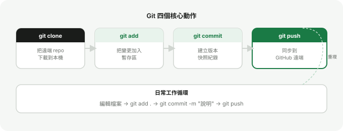

Chapter 4
clone、add、commit、push 流程
這四個動作是 Git 日常工作的核心。搞懂每個動作在做什麼，你就能把它們組合成自己的工作節奏。
流程全覽
Git 的基本工作流程可以用四個動作概括：

clone — 把遠端 repo 下載到本機
第一次取得專案時使用，建立本機副本並自動設定好遠端連結。
add — 把變更加入暫存區
告訴 Git「這些檔案的變更我要納入下一個 commit」。
commit — 建立版本快照
把暫存區的內容正式記錄為一個版本，附上說明文字。
push — 同步到遠端
把本機的 commit 推送到 GitHub，讓遠端與本機保持一致。
git clone
clone 會把整個 repository（包含所有歷史紀錄）下載到本機。
git clone https://github.com/your-account/repo-name.git執行後，當前目錄下會新增一個與 repo 同名的資料夾。進入資料夾就可以開始工作：
cd repo-name下載 ZIP 只拿到檔案本體，沒有 Git 歷史。clone 下載完整的版本紀錄，也保留了與遠端的連結，之後可以直接 push。
git add
add 把工作目錄的變更移到「暫存區」（Staging Area）。你可以選擇加入全部，或只加入特定檔案。
# 加入所有變更
git add .
# 只加入特定檔案
git add index.html style/main.css你可以用 git status 查看哪些檔案已 staged、哪些還沒：
git status暫存區讓你能夠精確控制每個 commit 包含哪些變更。修改了三個檔案，但只想先 commit 其中兩個？用 add 選擇就好。
git commit
commit 把暫存區的內容建立成一個版本快照，永久記錄在 Git 歷史裡。
git commit -m "說明這次的變更內容"良好的 commit message 應該簡短、具體。幾個範例：
add navigation bar to index.htmlfix typo in chapter 2update hero section layout
commit 只發生在你的電腦上，不會自動上傳到 GitHub。你需要另外執行 push 才會同步到遠端。
git push
push 把本機的 commit 上傳到遠端 repository。
git push如果是第一次推送新分支，需要加上 upstream 設定：
git push -u origin main之後每次推送只需要 git push。
如果遠端有你本機沒有的 commit（例如別人推了新內容），需要先 git pull 把遠端的變更拉下來，解決可能的衝突後再 push。
日常工作循環
把這四個動作串起來，就是每天工作的標準節奏：
# 1. 確認目前狀態
git status
# 2. 加入要 commit 的變更
git add .
# 3. 建立版本紀錄
git commit -m "說明變更"
# 4. 推送到 GitHub
git push重複這個循環，你的每一個有意義的進度都會被記錄下來，隨時可以回溯、比較、分享。